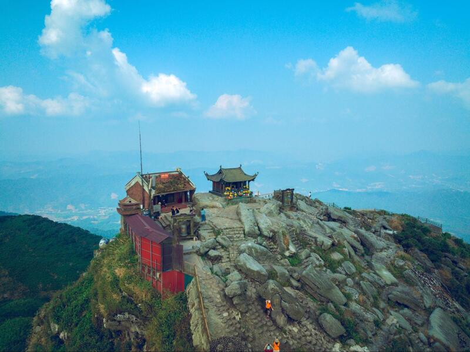
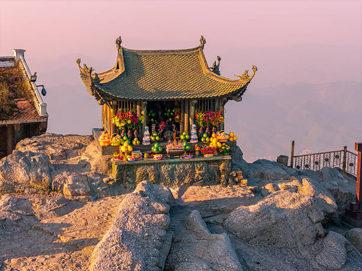
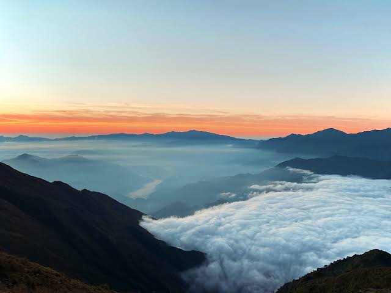
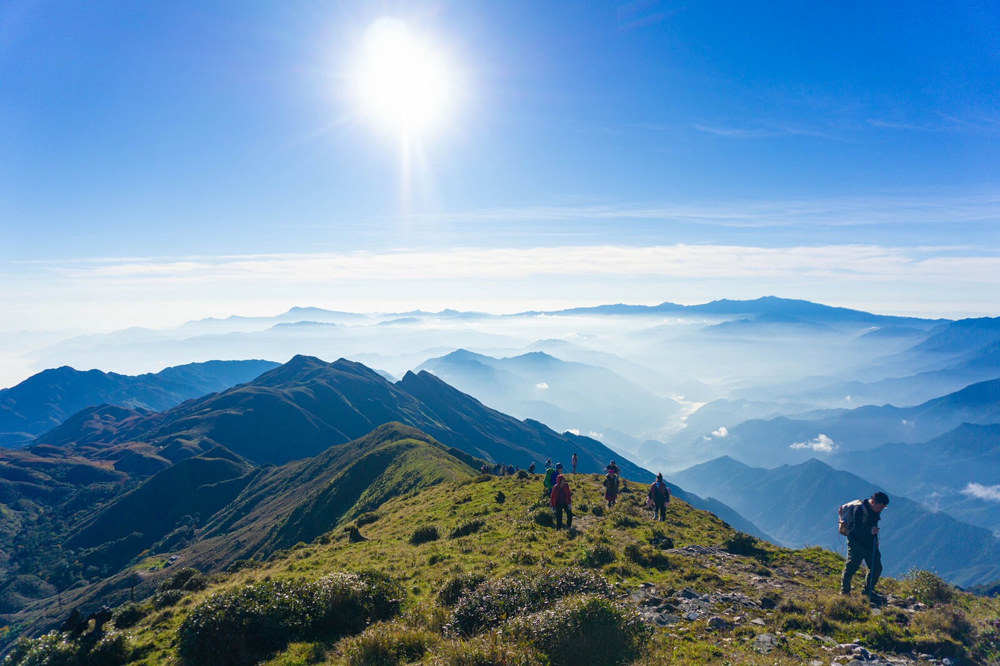
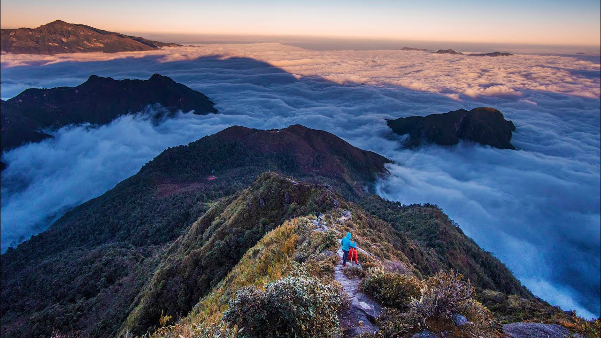
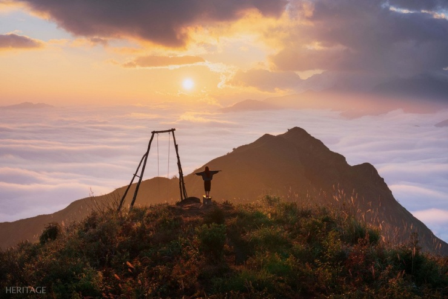
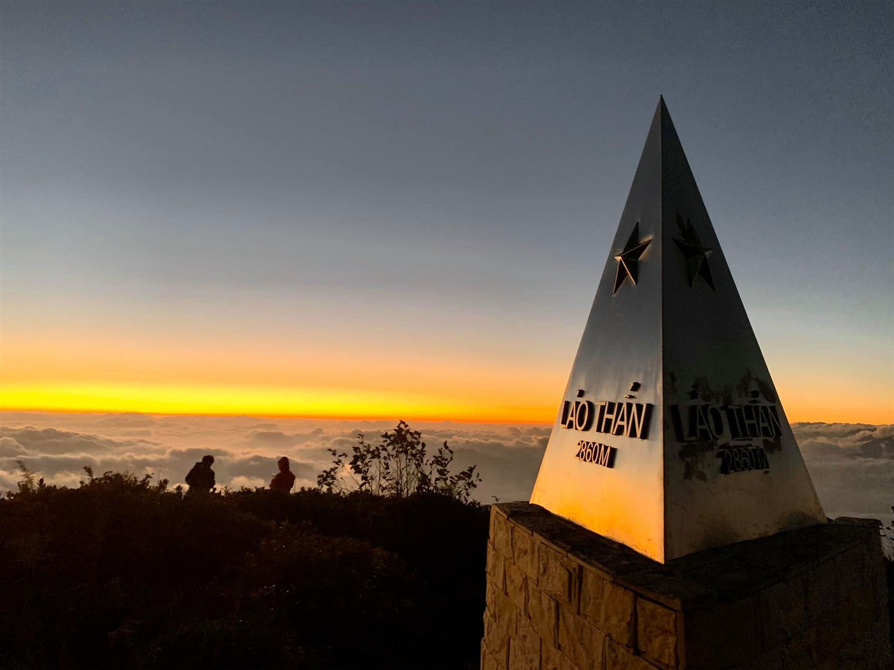
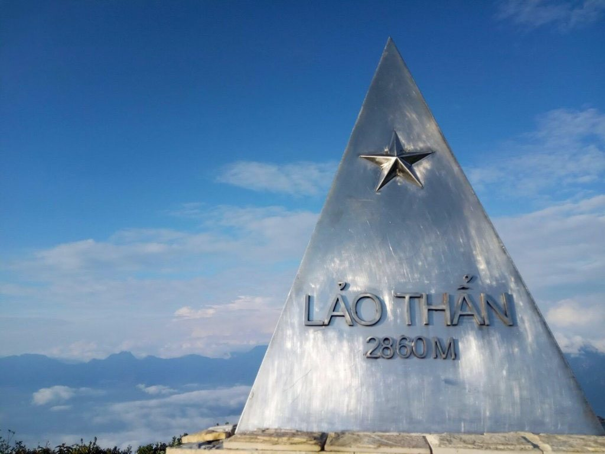
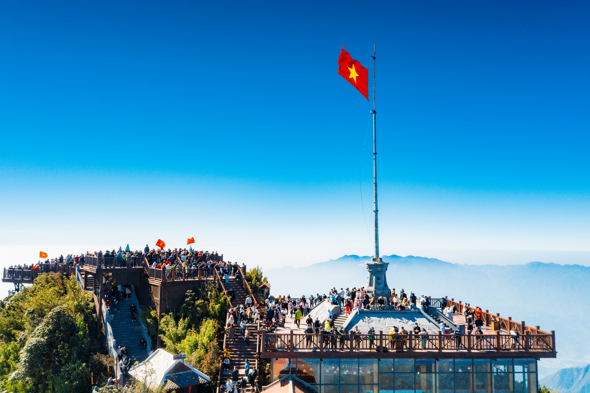
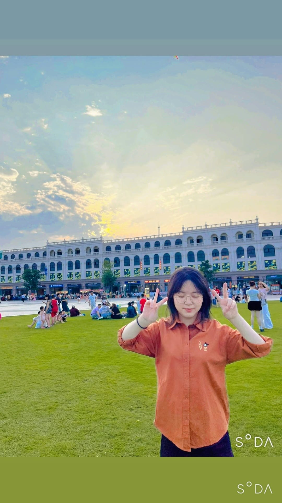

Fansipan
Biểu tượng cao nhất, phù hợp cả trekking lẫn du lịch cáp treo.
5 đỉnh núi đáng chinh phục nhất Việt Nam
“5 đỉnh núi, 5 tính cách, 1 hành trình chạm mây.”
Khám phá những cung đường nơi thiên nhiên, văn hóa và thử thách gặp nhau trên các đỉnh núi biểu tượng của Việt Nam.
Không chỉ là xếp hạng
Có người tìm kiếm đỉnh cao. Có người tìm biển mây. Có người đi tìm lịch sử. Có người chỉ muốn nhìn thấy bình minh phía trên những đám mây.
Mountain selector
Biểu tượng cao nhất, phù hợp cả trekking lẫn du lịch cáp treo.
Không gian văn hóa, lịch sử và tâm linh giữa rừng núi.
Biển mây, hoa Chi Pâu và những sườn núi giàu chất thơ.
Cung đường cho người muốn thử sức với rừng sâu và bình minh Núi Muối.
Cánh cửa thân thiện để bắt đầu trekking, cắm trại và săn mây.

3.143 m
Một biểu tượng vượt khỏi khái niệm trekking. Fansipan là nơi núi, mây và rừng Hoàng Liên Sơn hội tụ trên nóc nhà Đông Dương.
Explore tab / Fansipan
Không chỉ là một đỉnh núi để check-in, Fansipan tạo ra cảm giác rất rõ về độ cao: dãy Hoàng Liên Sơn mở rộng dưới chân, mây chạy qua thung lũng Sa Pa, và khu vực đỉnh có cả trải nghiệm trekking lẫn cáp treo cho nhiều nhóm du khách khác nhau.

Fansipan nằm trong dãy Hoàng Liên Sơn, thường được gọi là “Nóc nhà Đông Dương” với độ cao phổ biến 3.143 m. Sức hút của nơi này nằm ở sự đối lập rất thú vị: người thích thử thách có thể trekking qua rừng núi, còn du khách phổ thông vẫn có thể lên gần đỉnh bằng hệ thống cáp treo.
Sun World giới thiệu tuyến cáp treo Fansipan Legend là hệ thống ba dây từng được ghi nhận kỷ lục Guinness, tạo nên một trải nghiệm rất điện ảnh: cabin vượt thung lũng, rừng núi và mây trước khi lên vùng đỉnh.
Fansipan từng được biết đến với độ cao 3.143 m trong thời gian dài, còn các phép đo hiện đại năm 2019 xác định lại độ cao khoảng 3.147,3 m. Ngay cả một đỉnh núi quen thuộc cũng vẫn có những lớp thông tin mới khi được nhìn bằng công nghệ đo đạc hiện đại.
Fansipan cũng không đứng một mình. Nó nằm trong không gian Hoàng Liên Sơn và Vườn quốc gia Hoàng Liên, nơi có hệ sinh thái núi cao, khí hậu lạnh, rừng, hoa, mây và những ngày mùa đông có thể xuất hiện băng tuyết. Vì vậy trải nghiệm Fansipan không chỉ là lên một cột mốc, mà là bước vào một vùng núi cao rất khác với hình dung nhiệt đới quen thuộc về Việt Nam.

1.068 m
Yên Tử tạo chiều sâu khác biệt cho hành trình: không chỉ đi lên cao, mà còn đi qua rừng, chùa, tháp và các lớp lịch sử của thiền phái Trúc Lâm.
Explore tab / Yên Tử
Nếu các đỉnh còn lại thiên về trekking, Yên Tử tạo chiều sâu văn hóa: chùa, am, tháp, rừng cổ và hành trình gắn với Phật hoàng Trần Nhân Tông cùng Thiền phái Trúc Lâm.

Yên Tử không hấp dẫn bằng độ cao tuyệt đối mà bằng chiều sâu di sản. Cục Du lịch Quốc gia mô tả nơi đây là quần thể chùa, am, tháp, tượng và rừng cây cổ thụ; đỉnh Yên Tử có Chùa Đồng ở độ cao 1.068 m.
Năm 2025, quần thể Yên Tử - Vĩnh Nghiêm - Côn Sơn, Kiếp Bạc được UNESCO công nhận là Di sản Văn hóa Thế giới. Vì thế, Yên Tử không chỉ là một ngọn núi có chùa, mà là một không gian di sản có chiều sâu lịch sử.
Linh hồn của Yên Tử nằm ở câu chuyện Phật hoàng Trần Nhân Tông: một vị vua nhà Trần từng ở đỉnh cao quyền lực, sau đó nhường ngôi, xuất gia và gắn với sự hình thành Thiền phái Trúc Lâm Yên Tử vào thế kỷ XIII. Đây là chi tiết khiến Yên Tử khác hẳn các điểm trekking thuần thiên nhiên.
Không gian di sản không chỉ là một ngọn núi đơn lẻ. Nó liên kết núi rừng, chùa, am, tháp, di tích khảo cổ và các địa điểm gắn với nhà Trần, tạo thành một hành trình văn hóa trải rộng qua nhiều địa phương.

2.979 m
Tà Chì Nhù có vẻ đẹp mộng hơn là dữ dội: biển mây trắng, triền núi rộng và mùa hoa Chi Pâu nhuộm tím những cung đường Tây Bắc.
Explore tab / Tà Chì Nhù
Đây là đỉnh giàu chất hình ảnh nhất trong danh sách: sống núi mở, gió mạnh, biển mây trắng và những triền hoa tím khiến hành trình có cảm giác vừa hoang sơ vừa mộng.

Cục Du lịch Quốc gia Việt Nam cho biết Tà Chì Nhù cao 2.979 m, là đỉnh cao nhất huyện Trạm Tấu, Yên Bái và thuộc khối Pú Luông của dãy Hoàng Liên Sơn. Cung leo bắt đầu sau đoạn đường xe cơ giới qua khu vực Cang Chi Khúa, rồi bước vào hành trình trekking hơn 18 km.
Điều làm Tà Chì Nhù khác biệt là mùa hoa Chi Pâu. Tên hoa trong tiếng Mông có nghĩa gần như “không biết”, nhưng chính loài hoa dại ấy lại phủ tím các triền núi vào mùa đẹp nhất.
Nếu Fansipan là biểu tượng cao nhất, Tà Chì Nhù giống như một “đại dương trên mây”. Địa hình cao và thoáng khiến mây có thể phủ kín thung lũng phía dưới, tạo cảm giác người đi đang bước trên một biển trắng khổng lồ.
Cung này vẫn giữ cảm giác chinh phục rất rõ: không có cáp treo, nhiều đoạn dốc liên tục, đá sỏi, ít bóng cây và gió mạnh. Chính sự khắc nghiệt ấy làm cảnh bình minh, đồng cỏ, hoa Chi Pâu và biển mây trở nên đáng giá hơn.

3.046 m
Còn được biết đến với tên Bạch Mộc Lương Tử, Ky Quan San là hành trình của sức bền, rừng sâu, sống núi và khoảnh khắc bình minh trên Núi Muối.
Explore tab / Ky Quan San
Còn được gọi là Bạch Mộc Lương Tử, ngọn núi này hợp với người muốn cảm giác adventure rõ rệt: đường rừng dài, dốc gắt, thời tiết lạnh ẩm và phần thưởng là biển mây dày khi bình minh lên.

Ky Quan San cao 3.046 m, nằm giữa Lào Cai và Lai Châu. Nhiều tài liệu du lịch mô tả đây là một trong các điểm trekking nổi tiếng của Tây Bắc, với cung đường có thể bắt đầu từ Sàng Ma Sáo hoặc Dền Sung.
Bình minh Núi Muối là một trong những khoảnh khắc đáng nhớ nhất của cung này: người đi thường dậy rất sớm, leo trong lạnh và sương, rồi chờ mặt trời mở ra trên biển mây.
Ky Quan San còn được nhiều người biết đến với tên Bạch Mộc Lương Tử. Đây là một trong những đỉnh núi cao nhất Việt Nam, nhưng điều đáng nhớ không chỉ là con số 3.046 m mà là cảm giác “không có đường tắt”: rừng, dốc, đá, sống núi và thời tiết thay đổi liên tục.
Trên hành trình, cảnh quan có thể chuyển từ rừng xanh sang cỏ núi, vách đá, rừng phủ rêu rồi đến biển mây. Vào những đợt rét mạnh, khu vực núi cao còn có thể xuất hiện băng giá hoặc tuyết, tạo ra một Ky Quan San rất khác vào mùa đông.

2.860 m
Lảo Thẩn là cánh cửa dễ tiếp cận hơn vào thế giới trekking Tây Bắc: săn mây, cắm trại và đón bình minh trong một chuyến đi vừa sức.
Explore tab / Lảo Thẩn
Không quá cực như các cung trên 3.000 m, Lảo Thẩn vẫn có đủ cảm giác Tây Bắc: đồi cỏ, gió mạnh, lán nghỉ, bình minh và biển mây ở Y Tý.

Lảo Thẩn thuộc khu vực Y Tý, Bát Xát, Lào Cai và thường được gọi là “nóc nhà Y Tý”. Cục Du lịch Quốc gia Việt Nam ghi nhận đỉnh này ở độ cao khoảng 2.862 m, phù hợp với người muốn thử sức sau Fansipan hoặc người mới muốn một cung trekking có tính thử thách vừa phải.
Điểm đáng giá nhất là cảm giác “đài quan sát riêng”: khi lên vùng cao, mây từ thung lũng bị gió đẩy qua sườn núi, còn người đứng trên đỉnh nhìn thấy bình minh mở ra trên các lớp mây.
Lảo Thẩn đẹp vì cả hành trình chứ không chỉ ở mốc đỉnh: từ bản làng Y Tý, rừng, đồng cỏ, núi trọc, sương mây rồi đến khoảnh khắc đứng trên cao nhìn mây nằm dưới chân. So với các cung rất nặng như Ky Quan San, Lảo Thẩn thường được xem là lựa chọn dễ tiếp cận hơn cho người mới muốn thử trekking núi cao.
Một chi tiết có thể làm phần này giàu hình ảnh hơn là hoa đỗ quyên đỏ giữa núi rừng, tạo tương phản với rừng xanh, mây trắng và nền trời cao. Bên cạnh thiên nhiên, cung đường còn gắn với đời sống Y Tý, các bản làng và văn hóa cộng đồng vùng cao.
Altitude journey
Find your mountain

Đỉnh núi không phải điểm kết thúc. Nó là nơi bạn nhìn lại quãng đường mình đã đi qua.
Trở lại đầu hành trìnhAbout me
Tôi chọn chủ đề 5 đỉnh núi đẹp nhất Việt Nam vì đây là một đề tài có nhiều chất liệu hình ảnh, cảm xúc và dữ liệu để xây dựng một website storytelling. Chủ đề này cũng cho phép kết hợp giữa thiết kế giao diện, trải nghiệm tương tác và nội dung du lịch Việt Nam theo một cách trực quan, hiện đại.
